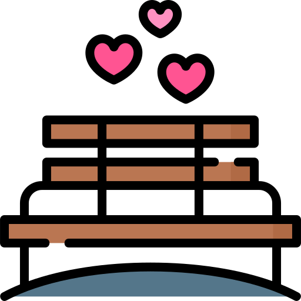

Aumentar nuestra confianza
Bebé créeme que cada vez que uno dudaba del otro sentía tan raro, porque ya tenemos 2 años de relación y estar desconfiando a estas alturas es como que bien feo de una relación tan larga :( pero aja, como antes dije, ya nos estamos estabilizando, pero creí que sería un buen punto tocar eso en esta ocasión
